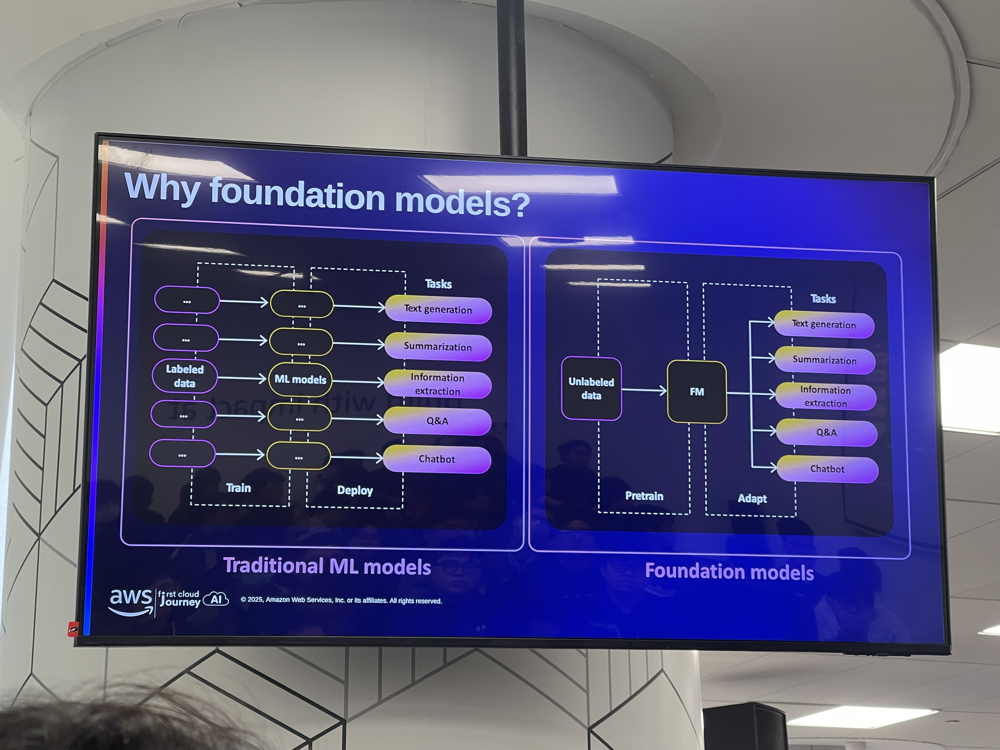

Event 2
AI/ML/GenAI on AWS
I. Thông tin chung về sự kiện
- Tên sự kiện: AI/ML/GenAI on AWS
- Thời gian: 8:30 – 12:00, ngày 15/11/2025
- Địa điểm: AWS Vietnam Office
- Mục tiêu:
- Cung cấp cái nhìn nền tảng về AI/ML và Generative AI trên AWS.
- Làm rõ đặc trưng của foundation models và các ứng dụng điển hình.
- Trình bày hệ sinh thái dịch vụ AI/ML của AWS, từ dịch vụ dựng sẵn đến nền tảng huấn luyện mô hình tùy biến.
- Minh họa quy trình xây dựng ứng dụng GenAI thông qua Amazon Bedrock, RAG và AgentCore.
II. Nội dung chính theo dòng thời gian
1. Phần mở đầu – Giới thiệu GenAI và Foundation Models (8:30 – 9:00)
Diễn giả Lâm Tuấn Kiệt giới thiệu tổng quan về Generative AI và vai trò của foundation models:
-
Khái niệm GenAI:
- Khác với mô hình ML truyền thống tập trung vào phân loại hoặc dự đoán, GenAI có khả năng tạo ra nội dung mới: văn bản, hình ảnh, âm thanh, mã nguồn,…
- Các foundation models được huấn luyện trên khối dữ liệu khổng lồ và mang tính đa miền, sau đó có thể fine-tune hoặc điều hướng để đáp ứng những bài toán cụ thể hơn.
-
Foundation Models & Amazon Bedrock:
- Bedrock được giới thiệu như dịch vụ quản lý truy cập tập trung cho nhiều foundation models (Claude, Llama, Titan…).
- AWS cung cấp cơ chế dùng cùng một API để thử nghiệm, so sánh hiệu quả – từ đó lựa chọn mô hình phù hợp cho từng trường hợp: chatbot, summarization, phân loại, RAG,…
-
Prompt Engineering:
- Được mô tả như kỹ năng quan trọng nhất khi làm việc với GenAI: thiết kế, kiểm thử và tinh chỉnh prompt để mô hình hiểu đúng bối cảnh yêu cầu.
- Ba kỹ thuật chính:
- Zero-shot: mô tả yêu cầu trực tiếp, không cung cấp ví dụ.
- Few-shot: thêm ví dụ minh họa để mô hình học cách trả lời tương tự.
- Chain-of-Thought: hướng dẫn mô hình trình bày từng bước suy luận nhằm đạt kết quả logic hơn.
-
RAG (Retrieval-Augmented Generation):
- Là kiến trúc kết hợp năng lực tạo sinh của mô hình với cơ chế truy xuất dữ liệu từ kho tri thức nội bộ.
- Lợi ích cốt lõi: giảm hallucination, cập nhật tri thức dễ dàng mà không cần huấn luyện lại mô hình.
2. Phiên “AWS AI/ML Services Overview” & Embeddings/RAG in Action (9:00 – 10:30)
Phiên này nhấn mạnh cách AWS tổ chức hệ thống dịch vụ AI/ML và cách vận dụng vào bài toán GenAI/RAG.
2.1. Embeddings và Titan Embeddings
- Embedding được giải thích như phương pháp biểu diễn dữ liệu (văn bản, hình ảnh) dưới dạng vector, giúp máy tính đo độ tương đồng hoặc phân cụm dữ liệu.
- Đây là nền tảng cho RAG, semantic search và các hệ thống recommendation.
- Titan Embeddings được giới thiệu là mô hình embedding tối ưu trên AWS cho:
- Semantic search
- RAG
- Tích hợp sâu với Amazon Bedrock và các dịch vụ AWS khác
- Demo minh họa pipeline RAG:
- Chuẩn hóa dữ liệu → chia nhỏ → sinh embeddings → lưu vào vector store → truy vấn → kết hợp với LLM để trả lời dựa trên ngữ cảnh.
2.2. Các dịch vụ AI dựng sẵn (Managed AI Services)
Diễn giả Hoàng Anh trình bày các dịch vụ AI có thể sử dụng ngay:
-
Amazon Rekognition – Nhận diện hình ảnh/video
- Use case: nhận diện đối tượng, khuôn mặt, text
- Chi phí tham khảo: 0.0013 USD/ảnh
-
Amazon Translate – Dịch đa ngôn ngữ
- Chi phí: 15 USD / 1 triệu ký tự
-
Amazon Textract – OCR và trích xuất cấu trúc tài liệu
- Giữ nguyên bảng, form, trường dữ liệu
- Chi phí: 0.05 USD/trang
-
Amazon Transcribe – Speech-to-Text
- Chi phí: 0.024 USD/phút
-
Amazon Polly – Text-to-Speech
- Chi phí: 4 USD / 1 triệu ký tự
-
Amazon Comprehend – Xử lý ngôn ngữ tự nhiên
- Chi phí: 0.0001 USD / 100 ký tự hoặc 3 USD/giờ
-
Amazon Kendra – Semantic Search / thành phần hỗ trợ RAG
- Chi phí: 30 USD/index/tháng + 0.35 USD/giờ
-
Amazon Personalize – Gợi ý cá nhân hóa
- Chi phí gồm training + dữ liệu + lượng recommendation
3. Phiên “Generative AI with Amazon Bedrock” – AgentCore & Pipecat (10:45 – 12:00)
Phần này đi sâu vào kiến trúc triển khai GenAI thực tế, bao gồm voice agents và agentic systems.
3.1. Pipecat – Framework cho voice/multimodal agents
- Pipecat được trình bày như một framework tối ưu hóa cho trợ lý giọng nói và tác vụ real-time:
- Kết hợp linh hoạt giữa STT, LLM, TTS và các công cụ khác trong một pipeline duy nhất.
- Tập trung vào độ trễ thấp – phù hợp callbot, voice agents và ứng dụng tương tác nhanh.
3.2. Amazon Bedrock AgentCore và hệ sinh thái Agentic AI
Diễn giả Hiếu Nghị giới thiệu cơ chế xây dựng agent nhiều bước:
- Khái niệm Agentic Systems:
- LLM chỉ trả lời; agent có thể lập kế hoạch, gọi công cụ, truy xuất dữ liệu và thực hiện nhiều bước liên tiếp.
- Bedrock AgentCore hỗ trợ:
- Điều phối workflow
- Gọi tools (Lambda, API nội bộ…)
- Kết hợp RAG với Bedrock Knowledge Base
- Guardrails để kiểm soát nội dung
- Logging & monitoring khi vận hành thực tế
- Các framework hỗ trợ agents:
- crew.ai, ADK, LlamaIndex, LangChain, LangGraph, Strands Agents SDK,…
III. Kiến thức và bài học rút ra
-
GenAI là thành phần trong hệ thống lớn hơn
- Foundation model chỉ là một phần; còn cần RAG, pipeline dữ liệu, monitoring, search,…
-
Nắm được cách lựa chọn giữa dùng dịch vụ AWS dựng sẵn và tự xây dựng với Bedrock
- Các dịch vụ như Rekognition/Textract/Comprehend phù hợp bài toán rõ ràng.
- Với dữ liệu đặc thù, cần kết hợp Bedrock + Embeddings + RAG.
-
Ý thức về chi phí ngay từ giai đoạn thiết kế
- Các mức giá minh họa cho thấy cần tính toán volume để đạt cân bằng giữa hiệu năng và ngân sách.
-
Tư duy agentic là bước tiến tiếp theo của GenAI
- Không chỉ hỏi–đáp, mà hướng tới tự động hóa quy trình, hỗ trợ thực hiện hành động, tổng hợp dữ liệu, đưa ra quyết định.
IV. Định hướng áp dụng cá nhân
-
Xây dựng một pipeline RAG trên AWS
- Textract → Embedding (Titan) → Vector Store → Kendra/Custom Search → Bedrock (Claude/Llama).
-
Thử nghiệm một agent nhỏ với Bedrock AgentCore
- Giai đoạn đầu: truy xuất + tóm tắt nội dung tài liệu.
- Giai đoạn mở rộng: agent gọi Lambda thực thi tác vụ cụ thể.
-
Cải thiện kỹ năng prompt engineering
- Luyện tập zero-shot, few-shot, CoT cho các bài toán về AI/ML, DevOps và Security.
- Xây dựng thư viện prompt sử dụng lại.
V. Một số hình ảnh trong sự kiện



 )
)